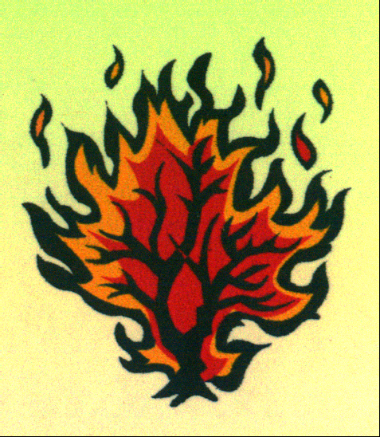

A BRIEF HISTORY
OF
PRESBYTERIANS IN BLACK RIVER
NEW BRUNSWICK
Donald E. M. Glendenning, C.M.
Charlottetown, P.E.I.
December 2003
ACKNOWLEDGEMENTS
The author grew up in the community of Black River and in St. Paul’s Presbyterian Church. St. Paul’s was an integral part of our family life; my mother and father were among the founders. This paper is an informal and brief record of St. Paul’s Church, in the context of more than two centuries of Presbyterianism along the south shore of the Miramichi River in New Brunswick, Canada. It is included as part of a binder of photos, clippings and other mementoes prepared to mark the 75th anniversary of the opening of the church.
Much of the information was gathered during brief visits to the Miramichi; longer visits would have provided greater access to church records, newspapers of the day and interviews with church members. While care was taken in gathering information, transcription errors are possible. This paper relies heavily on the following sources:
Black River and its First Settlers by A. W. MacDougall
A number of papers entitled History of St. Paul’s Presbyterian Church, Black River, NB (Dates and authors unknown)
Church Union in Pictou Presbytery, 1925 by Dr. John R. Cameron, 1969.
Memoir of Rev. James MacGregor, DD, by Rev. George Patterson (Grandson), Philadelphia, 1859.
Church minutes, clippings, photos and notes from a variety of sources but now available in an album put together by St. Paul’s Presbyterian Church in 2003.
Conversations with church members, adherents and friends
The author would be remiss not to mention the major contribution to Black River history made by Mr. A. W. MacDougall through his book, Black River and its First Settlers. This book has become a major source of information for historians and genealogists alike in their search for roots in the Black River area. Pages 31-54 from Mr. MacDougall’s book are included as Appendix A with permission of Mr. MacDougall’s daughters, Edna (MacDougall) Cameron and Margaret MacDougall.
Thanks also are extended to many people especially Kenneth Glendenning, Clerk of Session, St. Paul’s Presbyterian Church, for access to clippings, photos, early histories and other papers.
The Miramichi area of New Brunswick has a long and proud history with Presbyterians playing key roles. I am delighted to provide this record, however brief, of their activities in Black River Bridge.
Don Glendenning
BLACK RIVER
The name, Black River, is thought to have come from the MicMac word Matquantigook that probably meant “black river” and is a river with some tributaries flowing into Bay du Vin and the inner Miramichi Bay. At one time, Black River appears to have extended as far east as Bayside (Miramichi) and perhaps as far as Bay du Vin. Black River was settled during the late 1700s and early 1800s with most of the land along the Little Black River (Little Branch) being granted on June 3, 1812.
The earliest settlers in the Black River as we know it today were United Empire Loyalists and Highland Scots some of whom settled initially along the Saint John River and later relocated to the Miramichi. Settlers in Bay du Vin tended to be English and followers of the Church of England with Black River being Scottish and Presbyterian. The land was heavily wooded, winters were long and cold and life was hard. But pioneers were hardy folk who were determined to carve out a new life for themselves, their families and their offspring. These settlers brought crude axes, shovels and other implements to clear land, plant crops and build homes. And they also brought their religion – mostly Presbyterian.
Earliest names occurring on grants made from crown lands along the Black River included MacNaughton, MacDonald, MacLean, MacRae, Gunn, Sinclair, Fowlie, McGraw, Cameron, Kelley, MacDougall and MacBeath. Many descendants with these names can still be found in the community two hundred years later.
THE FIRST CHURCH
At first the settlement was served by itinerant ministers and missionaries. Among the visiting ministers was the Rev. Dr. James Drummond MacGregor, a Scot who had been sent out to minister to the Presbyterians in Pictou, Nova Scotia. In addition to serving the folk of Pictou, MacGregor traveled throughout New Brunswick, Nova Scotia and Prince Edward Island. Each visit to a community usually lasted several days, and even weeks, and included preaching, praying, and religious conversations. The Memoir of Rev. James MacGregor, D.D. recount his visit to Black River (p.316) as follows:
“On the first and second visits to the Miramichi in 1797 and 1807, he preached and baptized at Black River, Bay du Vin, and on both sides of the Miramichi, up as far as the point, so called, at the junction of the North and South-west branches. Those who recollect him remark his happy faculty in introducing religious conversation.”
And further on:
“His being present at the induction of Mr. Thompson in 1817 is well remembered.”
A. W. MacDougall reports that a Rev. Jones resided in Bay du Vin but his religious affiliation is not known.
In 1812, a church, thought to be Presbyterian, was built in at Tuckers Point, at the mouth of the Bay du Vin River on the west side. (While Tucker’s Point was used in conversation by several people, the name does not appear in Geographical Names of New Brunswick by Rayburn, 1975.) Some gravestones are still to be found in the area. The church served all Protestants in the area. A. W. MacDougall reported that a contract for the building of the church was in the possession of a “gentleman in Bay du Vin” and that the document:
“ bore the signature of the contractor, a Mr. Gray of Chatham, and also the names of three men representing the people, John B. Williston, Farquhar MacRae and a Mr. McLeod. Mr. Williston lived in Bay du Vin, Mr. McRae in Bay Side, and Mr. McLeod in Black River.
The church was a small building of frame construction, and was built close to the shore on the westerly side of the south of Bay du Vin River, at a spot since known as ‘Ullock’s Point’, from the name of the man who owned the surrounding land, and where a ferry connected with the other side of the river. It was used for public worship as occasion required until the building of the first church on the site at Black River, and then fell into disuse…
A small plot of land adjoining the church was used as a cemetery, and a considerable number of people were interred there.
ST STEPHENS PRESBYTERIAN CHURCH
Given that Black River was a growing community and that most of the Presbyterians lived several miles from Tucker’s Point, a community of people who worshipped mostly in the English tradition, it is not surprising that talk soon turned, first to finding a Presbyterian minister and later to constructing a place of worship. A. W. MacDougall reports that a public meeting was held in Bay du Vin in 1818 with a view to securing a resident minister to serve Bay du Vin, Tabusintac and Burnt Church - a minister who could speak in Gaelic as well as English since “there are several amongst us who do not understand the English”.

In 1834, a public meeting was held in Black River at which it was decided to petition for a minister to serve both Black River and Tabusintac. In response to the request, the Rev. Simon Fraser was dispatched to serve their needs. I do not know if the Rev. Fraser initially served both Black River and Bay du Vin but it appears that shortly thereafter he became the minister for Black River only.
On November 10, 1834 a meeting was held in Black River at the residence of Mr. Archibald Cameron and a committee was struck to proceed with the erection of a church on Alexander Gunn’s Point, a location already in use as a burial ground. Committee members were:
Alexander MacBeath, Chairman
Angus Sinclair, Secretary
Alexander MacDonald
Hugh (Ewen) Cameron
Alexander Cameron
Peter MacDougall
Enoch Godfrey
W. MacDougall describes Gunn’s Point (part of Lot #4 granted to Alexander Gunn on June 3, 1812) as follows:
“The proposed site for the church, which has long been known as Church Point, is a peninsula several acres in extent, jutting out from the mainland on the South Side of the Black River about three miles from its mouth, and connected to the shore by a narrow neck of land. It has dry sandy soil, and at that time was partly covered with a heavy growth of timber. It is an ideal location for a church, probably without parallel in the whole Province. A portion of it had previously been used as a burial ground, and there it was decided to build the church.”
On April 21, 1835 a contract was awarded to William Porteous to erect the church; structural timber was cut locally. The building was 45 feet long by 30 feet wide with an 18-foot wall. On November 20, 1836, the first house of worship, St Stephen’s Presbyterian Church, was formally opened with the Rev. Mr. Fraser as its first minister.
In the years that followed, St. Stephens Church was beset by two major problems. The financial problems resulted from the costs of construction and the also the cost of ongoing operations. (This is still a challenge to churches in the 21st century.)
By the turn of the century, St. Stephen’s sanctuary had become quite dilapidated and, instead of making repairs, a decision was taken to build a new sanctuary. The result was the opening of the present sanctuary on December 30, 1906.
Church differences in Scotland were transported to Canada and resulted in tensions within St. Stephens Presbyterian Church in Black River. The reader is referred to Black River and its First Settlers for further information.

The second St. Stephen’s Presbyterian Church
in Black River Bridge, N.B. (now St. Stephen’s United Church)
CHURCH UNION
The Church Union Movement resulted in the creation of the United Church of Canada in 1925. It had been fifty years in the making and should be viewed as part of an even greater movement first towards union among Presbyterians, and later with other denominations as well.
Over the years there were many divisions within the Presbyterian Church in Scotland. Most of the differences resulted from differing views as to the proper or acceptable relationship between church and state. Scots were not prepared to accept a state church, as was the case in England. Perhaps another cause for dissension was the strong view that no minister or church hierarchy should stand between a person and his/her God. Then there was the issue of churches being able to appoint their own minister rather than have a minister appointed by the land owner or proprietor or some church body. By 1843 there were four different Presbyterian churches in Scotland – and Scots brought their differing views with them when they came to Canada. The early mid -1800’s witnessed a movement towards unification among a number of Presbyterian denominations and resulted, by 1875, in the creation of the Presbyterian Church in Canada - and discussions with other Presbyterians continued.
Other churches were coming together as well. Union within the Methodist congregation was achieved by 1884 and within the Congregationalist churches by 1906. The Church of England, as early as 1836, had appointed a committee to explore possible union with like-minded denominations. Talk of further unification, therefore, was not unexpected. In fact, at the inception of the Presbyterian Church in Canada, Dr. John Cook, the Moderator, said, “far larger union is in store”. Others expressed similar sentiments. A federation of denominations was also considered an option.
A number of congregations cooperated in the Sunday School Association of Canada, Temperance Movement, Evangelical Alliance, etc.; this helped to break down other denominational barriers. There was even a sharing of social services between congregations, cooperation in the training of clergy and a wider discussion of matters theological.
By 1904 discussions were well under way towards an organic union among Protestant denominations led by a joint committee representing the Presbyterians, Methodist and Congregational denominations. The report to the General Assembly of the Presbyterian Church concluded that the process should not be unduly hurried, should carry the consent of the entire membership and should not be contemplated until all the courts of the church had a chance to consider it. “Consent of the entire membership” and concerns about an unclear doctrinal statement for the new church appear to be the major points of dissention over the next two decades. In 1906 invitations to participate in discussions were issued to the Church of England and Baptist conventions but these invitations were declined. By 1912, those against union had begun to coalesce and organize. While votes at Presbytery, Synod and General Assembly levels continued to favour union; numbers against union at the congregational level continued to grow. Support for union was strongest among clergy and leadership moved to the courts of the church rather than remaining with members and adherents.
Decisions on church union were taken by each congregation. Tabulated nationally, the 1925 voting results were:
Votes cast in favour 121,547
Votes against 114,175
Total Votes 235,722
Members not voting 144,040
Total eligible voters 379,762
In the Maritime Synod, 18,883 voted in favour of union and 13,743 voted against.
Of the 4,981 members of the Miramichi Presbytery in 1925, 2,011 voted in favour of union and 647 voted against union with 2.323 not voting. Figures for St. Stephens Church are not available, however, the majority favoured union and St. Stephens Presbyterian Church became St. Stephens United Church.
The writer is not unaware of the tension within the congregation at the time, and within church families, with events surrounding Church Union; some may still exist. Perhaps the outstanding issue is that of the cemetery. Road signs point to both the Black River Cemetery and St. Stephens Cemetery yet they are one and the same.
BURIAL GROUND
As mentioned earlier, there was a burial ground beside the church in Bay du Vin. As early as 1823, however, the first burial took place on the present burial site in Black River. The original land on which the church and cemetery are located, Lot Number 4, was granted to Alexander Gunn on June 3, 1812. The area on which the church and cemetery are located was known as Gunn’s Point. Later ownership of the land passed to Enoch Godfrey and, in 1823 his father-in-law, Robert MacBeath, died and was buried on the Point. The second person, Duncan MacNaughton, was buried at Gunn’s point in 1824. Perhaps this was the origin of the “Black River Cemetery” to distinguish it from the one in use in Bay du Vin. In any case, according to my information, St. Stephen’s Presbyterian Church purchased the land in 1836 at the time that the new church was erected in Black River. The name, Church Point, which applies to the location at present, probably arises from that time.
A search of church records may throw more light on the issue of cemetery name. Was it St. Stephens Cemetery? Or St. Stephens Presbyterian Cemetery? Again in 1925, did the name remain as St. Stephens Cemetery or was it formally changed to St. Stephens United Church Cemetery. I leave it to others to sort out this issue. In any case, in 1940, the congregation of St. Stephens United Church passed a resolution granting Presbyterians the same rights and privileges as to the use of the cemetery as they had before church union and invited St. Paul’s congregation to name a member to the Cemetery Committee. The Presbyterians accepted the offer and decided that a separate Presbyterian cemetery was not needed.
ST PAUL’S PRESBYTERIAN CHURCH
Members of St. Stephen’s Presbyterian Church deciding to continue in the Presbyterian tradition formed a new congregation and for the first five years services were held in the Little Branch School, the Upper Black River School and in members’ homes led by visiting ministers and local congregational leaders. Student ministers and laymen also conducted services. In 1926 the John Robertson Women’s Missionary Society, a Women’s League, Mission Band and Sunday School were formed and the first baptisms (Kenneth Glendenning, Norman Glendenning and Roy Watling) were conducted on June 14 by Rev. F. G. MacIntosh. A Presbyterian Young People’s Society was formed in 1930 with Venetia (Glendenning) Russell as the first President.
What appears to be the first meeting of the Session of the emerging St. Paul’s Presbyterian Church was held in the Upper Black River School on September 30, 1928 at 3:00 pm with Rev. Wm. Stewart as Moderator and James A. Watling and James F. Godfrey as Elders. James F. Godfrey was elected Clerk of Session. James A. Watling was elected Representative Elder, a position he held for many years. The meeting opened with prayer and the Sacrament of the Lord’s Supper was observed.
The following former communicant members of St. Stephen’s Presbyterian Church were received by the Session and inscribed on the roll of the church:
Mrs. Richard Godfrey Black River Bridge
Mrs. Kenneth MacDonald Little Branch
Mrs. Grace Watling Little Branch
Mrs. James R. Cameron Little Branch
Mrs. Alex E. MacDonald Little Branch
Mrs. Robert MacDougall Hexham
Mrs. John E. MacNaughton Black River
Mrs. Freeman MacNaughton Black River
Mrs. Elmer A. Glendenning Little Branch
James R. Cameron Hexham
Malcolm Dick Black River
James Cameron Hexham
James MacLean Black River Bridge
Mrs. John R. Godfrey Black River Bridge
In July, 1929, a resolution was passed to erect a new sanctuary on land donated by Mr. John Gibson, and a building committee was appointed consisting of:
James A. Watling, convener,
John E. MacNaughton,
Rankine MacLean,
Elmer A. Glendenning,
James F. Godfrey,
John R. Godfrey and
John Gibson.
Local carpenters carried out construction of the edifice during 1929-30; Walter Glendenning hauled much of the lumber from Chatham and pulpit and pews were purchased from the former Methodist Church in Chatham.
On Friday, July 18, 1930, the 34th annual Miramichi Presbyterial met in the new facility. Activities included a morning session, lunch served by the ladies of Black River, a missionary pageant and service in the afternoon. The evening included a pageant presented by the Chatham PYPS, installation of officers, remarks by Dr. Squires, Minister of the Presbyterian Church in Chatham and by Mr. James A. Watling, the Representative Elder. A formal service of dedication was held at 8:00 pm chaired by Rev. J. W. Paul of Bathurst, Moderator and Clerk of Presbytery. Presbyterians in Black River now had their own sanctuary again.

St. Paul’s Presbyterian Church
Black River Bridge, N. B. Undated
A clipping from the local paper, unnamed and undated, describes the new building as follows:
“The new church is completed and ready for opening. A fine and beautiful edifice it is – a credit to any community. In these days when any kind of a building may pass for a church, it can be truly said that the structure in Black River reflects the ideal eclesiastical architecture for a small house of worship. The church has evoked nothing but praise from all who have seen it. Great appreciation is expressed to all who worked to make it what it is – to the building committee, to the carpenters in charge and others who have laboured without stint.”
In late 1930, discussions were held with Presbyterian congregations in both Kouchibouguac and Richibucto with a view to sharing the services of a full-time minister. As a result, Knox Presbyterian Church, Kouchibouguac and St. Paul’s became a two-point charge. In 1950, Calvin Presbyterian Church began to share a minister with St. Paul's and Knox – an arrangement that continues to this day.
ST. PAUL’E PRESBYTERIAN CHURCH
BLACK RIVER BRIDGE
SOME FIRSTS
Some firsts:
1926, June 14 – baptism of Kenneth Glendenning, Norman Glendenning and Roy Watling
1926 - John Robertson Women’s Missionary Society formed
1926 - Sunday School established
1926 - Mission Band formed
1928 - September 30 - Session meeting
1930 - Young Peoples Society organized
1930, July 18 - Miramichi Presbyterial met at St. Paul’s
1930, July 18 - St. Paul’s Presbyterian Church formally dedicated
1930, July 20 - regular service of worship conducted Dr. George C. Squires of Chatham.
1930, July 20 - baptism of Robert Burns Adams, son of Mr. And Mrs. George Adams and Donald Ernest Malcolm Glendenning, son of Mr. And Mrs. Elmer Glendenning.
1936, August 26 - wedding of Grace Elizabeth Glendenning and Roy Morrison Smith
1969, December 26 - funeral of Earl A. Taylor
ST. PAUL’S PRESBYTERIAN CHURCH
BLACK RIVER BRIDGE
MEMORIALS AND GIFTS
Pulpit Bible presented by Mrs. Atkinson, Kouchibouguac, NB
Organ donated by Robert Anderson
Communion Set in memory of Mr. And Mrs. Kenneth MacDonald
Communion Table given by Mrs. Allan MacKay
Stained glass window depicting The Good Shepherd given in memory of Mr. and Mrs. Robert MacDougall, by their niece, Mrs. Emma Trevors
Stained glass memorial window given in memory of the Allan Family by Mrs. James. R. Cameron
Church bell and Baptismal Cup given by Mr. And Mrs. Walter Glendenning in memory of their daughter, Betty Anne
Carpet for aisle and choir stand given by Mr. And Mrs., Arnold Prosser in memory of Mrs. Rankine MacLean
Pulpit Fall given in memory of Mrs. James A. Watling by her family
Renovation of the basement with money donated by Mrs. Annie MacNaughton in memory of her husband, Sandy, and daughter, Marjorie MacLean
Pulpit Chair given in memory of Mr. And Mrs. E. A. Glendenning by the family
Pulpit light donated by Miss Elspeth Allan in memory of Mrs. James R. Cameron
Two dozen hymnbooks given by the MacLean Family in memory of Mr. And Mrs. Rankine MacLean and their brother, John
Two dozen hymnbooks in memory of Cameron Russell by the congregation
Hammond organ
Console cabinet in memory of Cameron Russell by Venetia Russell and family
Storm windows installed in memory of John Glendenning by donations to the Memorial fund
Memorial window in memory of John Glendenning by Mary Glendenning and family
Hymnbooks and piano lamp in memory of Grace Williston by the congregation
Bible Stand and offering plates in memory of Elders Bert Gibson, Alex Newton and William Burnham given by the congregation
Brass vases in memory of James and Katherine Watling by the family
Public address system in memory of the founding Families by the congregation
Nine Bibles in memory of Judy (Glendenning) Morton by the family
Flag and stand donated by Venetia Russell
ST. PAUL’S PRESBYTERIAN CHURCH
BLACK RIVER BRIDGE, NB
W E D D I N G S
1936, August 26 Grace Glendenning and Roy Smith - Rev. J. M. Kik
1937, August 4 Venetia Glendenning and Cameron Russell- Rev. J. M. Kik
1958 ,January 31 Don Glendenning & Carol Chesney- Rev. Wallace Whyte
1961, June 1 Dorothy Bremner and Malcolm Taylor - Rev. Wallace Whyte
& Rev.G.B. Punter (United Church)
1962, June 29 Sandra Taylor and Eugene Shea - Rev. Wallace Whyte
1965, May 15 Margaret Glendenning and Aubrey Gibson - Rev. Wallace Whyte
1965, October 2 Marjorie Bremner and Carol Sweezey - Rev. Wallace Whyte
& Rev. Campbell (United Church)
1966, May 14 Virginia Taylor and Benson Harris - Rev. Wallace Whyte
1968, June 29 Jeanie Glendenning and Ray Williston - Rev. Wallace Whyte
1969, July 12 Donna Russell and Vernon Goodfellow - Rev. Wallace Whyte
1971, August 27 Ruth Bremner and John R. Walsh - Rev. D. Codling
1972, July 22 Janet Bremner and William Cobb - Rev. D. Codling
1973, February 3 Judy Glendenning and Paul Morton - Rev. Posno
1982, October 9 Loisanne Glendenning and Lynn Gregan - Rev. Blaikie
September 17, 1994 Amanda Taylor and Yves Manual - Rev. Crowell and
Father King
ST PAUL’S PRESBYTERIAN CHURCH
BLACK RIVER BRIDGE, NB
BAPTISMS
Child’s Name Father’s Name Mother’s Name Date of Birth Date of Baptism Minister
Kenneth Elmer Glendenning Elmer Glendenning Jean E. Watling July 25, 1924 June 14, 1926 Rev. F. G. MacIntosh
Norman Peters Glendenning Elmer Glendenning Jean E. Watling Dec. 31, 1925 June 14, 1926 Rev. F. G. MacIntosh
Roy Mills Watling James A. Watling Katherine C. Mills Feb. 6, 1926 June 14, 1926 Rev. F. G. MacIntosh
George Archibald Watling James A. Watling Katherine C. Mills Aug. 11, 1928 Oct. 25, 1928 Rev. W. Stewart
Earl F. MacNaughton Freeman MacNaughton Barbara MacLean Jan. 29,1929 Nov.17, 1929 Rev. G. Sheridan
Marven Douglas MacLean Rankin MacLean Bertha MacDonald Oct.1, 1929 Dec. 1, 1929 Rev. G. Sheridan
Donald E. M. Glendenning Elmer Glendenning Jean E. Watling Sept. 8,1929 July 20, 1930 Dr. Squires
Jesse Burns Adams George Adams Minnie Bell June 24, 1930 July 20, 1930 Dr. Squires
Kenneth Weldon MacDonald Weldon MacDonald Margaret Cameron June 2, 1930 July 19, 1931 Rev. J. Paul
Gertrude Ida Adams George Adams Minnie Bell Nov. 25, 1932 July 24, 1933 Rev. J. Middleton
John Cameron MacDonald Weldon MacDonald Margaret Cameron Jan. 5, 1933 July 24, 1933 Rev. J. Middleto
Catherine MacDougall Frank MacDougall Inez MacDonald Aug 15, 1929 July 24, 1933 Rev. J. Middleton
Iva MacDougall Frank MacDougall Inez MacDonald Nov. 18, 1932 July 24, 1933 Rev. J. Middleton
Joyce Rita Cameron Kenneth Cameron Eva Murdoch Jan. 28, 1936 Apr. 30, 1936 Rev. A. Gibson
Cild’s Name Father’s Name Mother’s Name Date of Birth Date of Baptism Minister
Lawrence MacDougall Frank MacDougall Inez MacDonald Oct. 15, 1931 July 24, 1933 Rev. J. Middleton
Rena Adams George Adams Minnie Bell June 8, 1935 Aug. 22, 1935 Rev. J.M. Kik
Lawrence Adams George Adams Minnie Bell May 27, 1937 Aug. 15, 1937 Dr. M.E. Genge
Annie Kathleen Adams George Adams Minnie Bell June 8, 1938 Oct. 20, 1938 Rev.P.McK. Sampson
James Neil Watling James A Watling K. C.Mills Feb. 26, 1938 May 8, 1938 Rev.P.McK.Sampson
Kenneth David Cameron Kenneth Cameron Eva Murdoch Feb. 24, 1938 May 8, 1938 Rev.P.McK.Sampson
Isabel Maxine MacDonald Weldon MacDonald Margaret Cameron May 31, 1939 Aug. 13, 1939 Rev.P.McK. Sampson
Dorothy Isabel Bremner George Bremner Edith Cameron Jan. 24, 1939 Aug.13, 1939 Rev.P.McK. Sampson
Glenn Cameron Russell Cameron Russell Venetia Glendenning July 11, 1939 Aug. 13, 1939 Rev.P.McK. Sampson
Gerald Ernest Taylor Earl Taylor Elinor Glendenning July 6, 1940 Sept. 22, 1940 Dr. M.E. Genge
Stephen Walter Glendenning Walter Glendenning Agnes Gibson Aug. 14, 1940 Sept. 22, 1940 Dr. M.E. Genge
Donald Alvin Young Alvin Young Marjorie Watling Sept. 23, 1940 July 13, 1941 Dr. M.E. Genge
Leonard Byron Russell Cameron Russell Venetia Glendenning Feb. 13, 1942 Sept. 20, 1942 Dr. M.E. Genge
Robert Earl Taylor Earl Taylor Elinor Glendenning May 9, 1942 July 11, 1943 Dr. M.E. Genge
Sandra Jean Taylor Earl Taylor Elinor Glendenning May 9, 1943 July 11, 1943 Dr. M.E. Genge
Helen Alice Adams George Adams Minnie Bell May 31, 1942 Nov. 7, 1942 Dr. M.E. Genge
Joan Gertrude Adams Williston Sterling Williston Grace Godfrey May 22,1933 July 24,,1933 Rev. J. Middleton
George Edward Adams Gordon Adams Bessie MacLeod Sept. 8,1942 Nov. 7, 1942 Dr. M. E. Genge
Laura Minnie Belding Frank Belding Eunice Adams Mar. 26, 1942 Nov. 7, 1942 Dr. M. E. Genge
John Vernon MacDonald John MacDonald Marion MacNaughton Mar. 29, 1942 June 29, 1943 Dr. M. E. Genge
Robert Francis Edgar Fowlie Edgar Fowlie Iona Cameron July 1, 1943 May 14, 1944 Rev. D.C.MacDonald
Marjorie Blanche Bremner George Bremner Edith Cameron Dec. 2, 1943 May 14, 1944 Rev. D.C.MacDonald
James Aubrey Gibson Albert Gibson Marjorie McLaneghanMay 3, 1944 June 4, 1944 Rev. D.C.MacDonald
Elizabeth Anne Glendenning Walter Glendenning Agnes Gibson June 1, 1944 July 23, 1944 Rev. D.C.MacDonald
Barbara Helen MacDonald John MacDonald Marion MacNaughton Aug. 24, 1943 Sept. 3, 1944 Rev. D.C.MacDonald
Child’s Name Father’s Name Mother’s Name Date of Birth Date of Baptism Minister
Margaret Virginia Glendenning John Glendenning Mary Watling Aug. 10, 1944 Nov. 12, 1944 Rev. D.C.MacDonald
John Willard MacDougall Frank MacDougall Inez MacDonald Jan. 29, 1935 Mar. 3, 1945 Rev. D.C.MacDonald
David Walter Taylor Earl Taylor Elinor glendenning Mar. 16, 1945 July 22, 1945 Rev. D.C.MacDonald
Donna Marilyn Russell Cameron Russell Venetia Glendenning Dec. 15, 1944 July 22, 1945 Rev. D.C.MacDonald
Lawrence Gibson Albert Gibson Marjorie McLaneghanJune 3, 1934 Aug. 12, 1934 Rev. J.M. Kik
.
Melvin Burns Adams Walter Adams Ida Duplassis Aug. 23, 1945 Sept. 23, 1945 Rev. D.C.MacDonald
Chester William Belding Frank Belding Eunice Adams Sept. 6, 1945 Sept. 23, 1945 Rev. D.C.MacDonald
John Franklin Glendenning John Glendenning Mary Watling Aug. 21, 1945 Oct. 28, 1945 Rev. D.C.MacDonald
David Cameron Bremner George Bremner Edith Cameron Oct. 18, 1945 June23, 1946 Rev. D.C.MacDonald
Lola Evelyn Adams Walter Adams Ida Duplassis Aug. 29, 1946 Sept. 27, 1946 Rev. D.C.MacDonald
Donald Ernest Newton Alex Newton Catherine MacLean Sept. 12, 1946 May 11, 1947 Rev. D.C.MacDonald
Virginia Elinor Taylor Earl Taylor Elinor Glendenning Mar. 29, 1947 May 11, 1947 Rev. D.C.MacDonald
Jean Elizabeth Glendenning John Glendenning Mary Watling July 15, 1946 May11, 1947 Rev. D.C.MacDonald
Malcolm Keith Glendenning Kenneth Glendenning Verne Taylor Mar. 1, 1947 May 11, 1947 Rev. D.C.MacDonald
Hugh Frederick Godfrey John A. Godfrey Margaret Cameron Mar. 6, 1947 May 11, 1947 Rev. D.C.MacDonald
Janet Rita Bremner George Bremner Edith Cameron Oct. 30, 1946 Sept. 21, 1947 Rev. D.C.MacDonald
Reginald Cameron Fowlie Edgar Fowlie Iona Cameron May 26, 1947 Sept. 21, 1947 Rev. D.C.MacDonald
Murray Allan Godfrey John A. Godfrey Margaret Cameron Mar. 7, 1948 Sept. 5, 1948 Rev. D.C.MacDonald
Norman Elliot Newton Alex Newton Catherine MacLean Aug. 5, 1948 Sept. 5, 1948 Rev. D.C.MacDonald
Diane Elizabeth MacDonald John MacDonald Marion MacNaughton Mar. 15, 1947 Sept. 5, 1948 Rev. D.C.MacDonald
Minnie Peggy Adams Gordon Adams Bessie MacLeod Oct. 3, 1946 Sept. 11, 1949 Rev. D.C.MacDonald
Margeurite Bernice Adams Gordon Adams Bessie MacLeod July 26, 1948 Sept. 11, 1949 Rev. Gordon Brett
Lillian Shirley Glendenning Walter Glendenning Agnes Gibson Apr. 20, 1950 June18, 1950 Rev. Fraser Dunbar
Francis Elmer Taylor Earl Taylor Elinor Glendenning Oct. 29, 1949 June18, 1950 Rev. Fraser Dunbar
Brian Robert MacLean Harold MacLean Jennie MacLean May 2, 1950 Nov.1, 1950 Rev. Fraser Dunbar
Child’s Name Father’s Name Mother’s Name Date of Birth Date of Baptism Minister
Ruth Adele Bremner George Bremner Edith Cameron Nov. 7, 1949 Oct. 15, 1950 Rev. Fraser Dunbar
Carolyn Anne Newton Alex Newton Catherine MacLean Jan. 20, 1951 June 24, 1951 Rev. Fraser Dunbar
Ollie Richard Adams Gordon Adams Bessie MacLeod Oct. 25, 1949 Sept. 20, 1951 Rev. Fraser Dunbar
Hilda Catherine Adams Gordon Adams Bessie MacLeod Aug. 1, 1951 Sept. 20, 1951 Rev. Fraser Dunbar
Karen Joyce Bremner George Bremner Edith Cameron Mar. 26, 1952 July 27, 1952 Rev. Fraser Dunbar
Kenneth Eldon Doring Taylor Earl Taylor Elinor Glendenning Aug. 17, 1952 Oct. 12, 1952 Rev. Fraser Dunbar
Dorothy Eileen Glendenning Norman Glendenning Jean Watling May 19, 1952 Oct.12, 1952 Rev. Fraser Dunbar
Brenda Katherine Holland Arthur Holland Marion M MacNaughtonAug.23,1951 Oct. 13, 195 Rev. Fraser Dunbar
Blaine Martin Holland Arthur Holland Marion M MacNaughtonAug.23,1951 Oct. 13, 1952 Rev. Fraser Dunbar
Nancy Ruth MacLean Harold MacLean Jennie MacLean Mar. 25, 1952 Oct. 13, 1952 Rev. Fraser Dunbar
Marion Esther Newton Alex Newton Katherine MacLean Dec. 26, 1952 May 10, 1953 Rev. Fraser Dunbar
Judith Lynn Glendenning N. Glendenning Jean Watling May 20, 1953 Dec. 20, 1953 Rev. Fraser Dunbar
June Christina Barbara McNairn Howard MacNairn Christina MacNaughtonSept. 15,1953 Dec. 20,1953 Rev. Fraser Dumbar Judy Lee Taylor Wm Arthur Taylor Joan Williston June 4, 1954 Jan. 2, 1955 Rev.Henry Russell
Rodney Wm. Bernard Taylor Wm Arthur Taylor Joan Williston Sept. 13, 1955 Jan. 29, 1956 Rev.Henry Russell
Alton Elmer Glendenning Norman Glendenning Jean Watling Jan. 9, 1955 Jan. 29, 1956 Rev.Henry Russell
Carla Louise Glendenning Walter Glendenning Agnes Gibson June 27, 1958 Aug. 31, 1958 Rev.W. E. Whyte
Lois Ann Glendenning Norman Glendenning Jean Watling May 19, 1960 Jan. 1, 1961 Rev.W. E. Whyte
Timothy David Taylor Malcolm Taylor Dorothy Bremner Dec. 1, 1962 Feb. 3, 1963 Rev.W. E. Whyte
Suzanne Kathleen Russell Glenn Cameron Russell Marilyn Mae Ellis Jun. 20, 1962 Apr. 14, 1963 Rev.W. E. Whyte
Glenda Ruth Hamilton John Hamilton Rena Adams Jun. 23, 1961 May 30, 1963 Rev.W. E. Whyte
Hope Arlene Hamilton John Hamilton Rena Adams Dec. 31, 1962 May 30, 1963 Rev..E. Whyte
Paul Anthony Belding Frank Belding Eunice Adams July 21, 1962 May 30, 1963 Rev.W. E. Whyte
Gail Krista MacDonald Leonard MacDonald Laura Belding April 26, 1963 May 30, 1963 Rev.W. E. Whyte
Darla Jean Shea Eugene Shea Sandra Jean Taylor Dec. 5, 1962 Jan. 16, 1963 Rev.Wallace E. Whyte
Child’s Name Father’s Name Mother’s Name Date of Birth Date of Baptism Minister
Robin James Taylor Malcolm Taylor Dorothy Bremner April 8, 1964 June 28, 1964 Rev.W. E. Whyte
Teena Ethel Taylor William Taylor Joan Williston April 24, 1959 Aug. 2, 1964 Rev.W. E. Whyte
Sherri Grayce Taylor William Taylor Joan Williston Sept. 22, 1961 Aug. 2, 1964 Rev.W. E. Whyte
Karin Janet Taylor William Taylor Joan Williston Jan. 1 1963 Aug. 2, 1964 Rev.W. E. Whyte
Grant William Belding Frank Belding Eunice Adams Sept. 2, 1965 Sept. 22, 1965 Rev.W. E. Whyte
Eric Norman Glendenning Norman Glendenning Jean Watling Aug. 26, 1965 Jan. 2, 1966 Rev.W. E. Whyte
Dale Phillys Taylor Malcolm Taylor Dorothy Bremner Dec. 1, 1965 Apr. 17, 1966 Rev.W. E. Whyte
Cheryl Anne Sweezey Carl Sweezey Marjorie Bremner July 30, 1966 Nov. 13, 1966 Rev.W. E. Whyte
Kimberley Anne Newton Norman Newton Patricia L Gregan Nov. 7, 1967 Jan.14, 1968 Rev.W. E. Whyte
Cynthia Helen MacDonald Vernon MacDonald Shirley Jardine Mar. 9, 1968 Mar. 19, 1968 Rev.W. E. Whyte
Gregory Mark Gibson Aubrey Gibson Margaret Glendenning April 13,1968 June 30, 1968 Rev.W. E. Whyte
Jonathon Paul Russell Leonard Russell Glenna Ellis Dec. 1, 1968 Apr .20, 1969 Rev.W. E. Whyte
Lorena Marlene Newton Francis Alexander Newton Lorena Joyce Bennett Dec. 30, 1968 Jan. 29, 1969 Rev.W. E. Whyte
Natalie Dawn Shea Eugene Shea Sandra Taylor July 7, 1969 Aug. 24, 1969 Rev.W. E. Whyte
Eric Francis Newton Francis Alexander Newton Lorena Joyce Bennett Aug. 8, 1971 Sept.12, 1971 Rev. John P. Posno
Shawn Benson Harris Benson Harris Virginia Taylor Jan. 8, 1970 Jan. 23, 1972 Rev. John P. Posno
Krista Lynn Harris Benson Harris Virginia Taylor Dec. 15, 1971 Jan. 23, 1972 Rev. John P. Posno
Kirk Edward Shea Eugene Shea Sandra Taylor June 11, 1971 Jan. 23, 1972 Rev. John P. Posno
Krista Lea Newton Norman Newton Patricia Gregan Mar.3 1972 June 11, 1972 Rev. John P. Posno
Tanya Leah Watling Gerald Watling Brenda Holland June 6, 1973 Dec. 23, 1973 Rev. John P. Posno
Jennifer Lynn Sweezey Carl Sweezey Marjorie Bremner Sept. 7, 1973 Mar. 24, 1974 Rev. John P. Posno
Kelli Jean Morton Paul Morton Judy Glendenning Apr. 11 1974 June 16, 1974 Rev. John P. Posno
Valerie Elizabeth Taylor Malcolm Taylor Dorothy Bremner Mar.23, 1972 May 14, 1972 Rev. John P. Posno
Mark Lyman Walsh Jack Walsh Ruth Bremner Mar.10 1972 May 14, 1972 Rev. John P. Posno
Andrea Edith Cobb William Dennis Cobb Janet Bremner Apr. 8, 1973 Sept. 9, 1973 Rev. John P. Posno
Child’s Name Father’s Name Mother’s Name Date of Birth Date of Baptism Minister
Korena Kaye Newton Norman Newton Patricia Gregan Jan. 2, 1975 Mar. 30, 1975 Rev.John P. Posno
Natasha Janet Cobb William Dennis Cobb Janet Bremner Nov. 15, 1974 May 11, 1975 Rev. John P. Posno
Danny Paul Morton Paul Morton Judy Glendenning May 26, 1975 Nov. 2, 1975 Rev. John P. Posno
Stacey Lynn Walsh Jack Walsh Ruth Bremner March 30, 1976 June 30, 1976 Rev. John P. Posno
Darla Maria Hamilton John Matthew Hamilton Rena Burns Adams Nov. 17, 1973 Nov. 8, 1976 Rev. John P. Posno
Tyson William Cobb William Dennis Cobb Janet Bremner Sept. 20, 1976 Dec. 26 1976 Rev. John P. Posno
Janet Elaine Goodfellow Donald Vernon Goodfellow Donna Marilyn RussellJune 20, 1976 Dec. 26, 1976 Rev. John P. Posno
Gerri Allison Watling Gerald Watling Brenda Holland Aug. 21, 1975 Dec. 21, 1975 Rev. John P. Posno
Katherine Ann Goodfellow Donald Vernon Goodfellow Donna Marilyn Russell Jan. 1, 1978 June 25, 1978 Rev. John P. Posno
Allyson Karen Cobb William Dennis Cobb Janet Bremner Jan. 11, 1979 April 8, 1979 Rev. John P. Posno
Amy Lynn Goodfellow Donald Vernon Donna Marilyn Feb. 26, 1980 Feb. 1981 Rev. D. E. Blaikie
Nicholas Sylvain Hudon Sylvain Hudon Karen Bremner Dec. 10, 1979 Sept., 1981 Rev. D. E. Blaikie
Jonathon Maurice Hudon Sylvain Hudon Karen Bremner March 18, 1982June 6, 1982 Rev. D.E. Blaikie
Cameron Richard Goodfellow Vernon Donna Feb. 11, 1982 Dec. 12, 1982 Rev. D. E. Blaikie
James Lee Andrew Burnham Lee Burnham Bernadette Burnham Nov. 6, 1983 June 16, 1985 Rev.D. E. Blaikie
Christopher Joseph Gregan Lynn Gregan Loisanne Glendenning May 21, 1986 Aug. 24, 1986 Rev. D E. Blaikie
ST PAUL’S PRESBYTERIAN CHURCH
BLACK RIVER BRIDGE
FUNERALS FROM CHURCH
1969, December 26 Earle A. Taylor
1973, February 23 Elinor Jean (Glendenning) Taylor
1976, September 19 Mrs. James R. Cameron
1976, November 17 Jack Hamilton
1979, August 25 Donald Cameron Russell
1983, November 25, James A. Watling
1985, June Mrs. George Adams
1986, June 26 John Franklin Glendenning
1988, March 9 Bert Gibson
1988, July 22 Alex Newton
1989, December 26 Grace (Godfrey) Williston
December 28, 1990 Mrs. Keeping
1998, June 20 Walter Jubal Glendenning
2000, November 13 Marjorie (McLenaghan) Gibson
2001, July 29 Catherine (MacLean) Newton
2003, June 10 Agnes Elspeth (Gibson) Glendenning